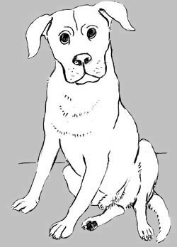

|
La Ragazza: Raffaella Torresan |
|||
 |

Book Description You
could buy methedrine ampoules over the counter in Indian chemists, and
soon he
was injecting her. The needle changed everything. Pure speed, she was
riding
high, too high, and soon she was completely out of control. She
couldn’t get
enough, once she doped up via the needle. The methedrine ‘flash’ high,
was what
it was all about—that timeless, endless, space-out, that floating,
mental
stillness, eternity in the now. Nothing else came close!
La Ragazza is a confessional work of fiction—Raffaella Torresan’s central character, La Ragazza (The Girl) can’t settle in to suburban school life so she leaves home at age fifteen and hits the mean streets of the city. She finds it. Sex, drugs, the whole damn thing. The Girl wants to see The World and The Big Bad World loves nothing more than to lead innocence astray. By the time. much much later, when The Girl returns to her origins she has seen the wonderful and terrible sights of the Far Shores, found love and loss, and the wonderful/terrible world of drugs. She has learned to sacrifice everything and everyone—mainly herself—for The Hit. Will the needle eat into her soul? Can she see that The Drug will take everything from you... even life itself? Raffaella Torresan has written a compelling story that bleeds truth through the fiction. What is real? Only you can decide... Colin Talbot
Raffaella Torresan is always working. This is the most important fact about Raff and her art practice. She doesn’t sit around talking about what she is going to do, she just does. The other thing about Raff is that she’s a collector. Of books, music, ideas, magazine articles. And people. Raff is a Melbourne institution and over the years she has collected an interesting assortment of people from the bohemian scene, of jailbirds, of artists, writers and poets. She has photographed poets reading their work, she has painted their portraits, she has painted other painters. She has had many exhibitions of her own work, and curated many more group shows which she considers ‘conscience’ shows, often with interesting themes, such as ‘Leave The Animals Alone’ and ‘For Love of Trees’ and ‘The Kindness Show’ and Weep Leviathan and more. She doesn’t discuss these ideas: she just gets a group of people to contribute via their words or images. She is of the ‘just get on with it’ school of arts practice. Which goes back to the Pram Factory days. Raff is old school punk, un-hierarchical. In La Ragazza, she tells us some of her own story which is often dreamlike but also hard and gritty. Evanescent portraits of characters in her life drift in and out. An interesting portrait of a time and a place; and of how a girl becomes a woman, and an artist. Maurice McNamarah
ISBN: 9780648038719 152 pages $27.00 |
|||
Book Sample Prologue
You
could buy methedrine ampoules over the counter in Indian chemists, and
soon he was injecting her. The needle changed everything. Pure speed,
she was riding high, too high, and soon she was completely out of
control. She couldn’t get enough, once she doped up via the needle. The
methedrine ‘flash’ high, was what it was all about—that timeless,
endless, space-out, that floating, mental stillness, eternity in the
now. Nothing else came close!
To bring her back down he started injecting her with morphine—no thoughts, no feelings. Nothing mattered. Now she was hooked and wanted more. She became her habit, the more you use, the more you want. Days of India drugged out, madness. Many years were to follow before she found her way back... So what is the best way to live one’s life—where to start? Perhaps, the best way finally, is to be free to live in the here and now, moment to moment where in simplicity and freedom one enjoys a walk in the park. The key words here; ‘simplicity’ and ‘freedom’. .
. .
The Ring
We
are small and have our own special ‘dream-bed’ garden. It is both
square and round which shape serves to spring our fantasies. We enter
our garden and lie face up, surrounded by the perfume of flowers, the
vastness of sky and the tumult of clouds. We close our eyes—quiet and
still, we dream.
Our musings, our drifting thoughts, wander towards the unknown. Arms and legs outstretched, we glide the vast expanse where fragrances such as potpourri, myrrh and musk, sweeten our drift. Violets and violas; purple, lilac, mauve, ignite our thoughts and fantasies, form shapes and colours in the sky. White lily; velvet smooth, fold us into milky warmth. Roses; red, vermilion, magenta, crimson, alizarin, maroon, amaze and transport us. Jonquils and daffodils; yellow bright and creamy white, glide softly around our dreaming. This bed of perfumed flowers, these colours and aromas, this circle square enchantment—our back yard. We are safe, we are home. .
. .
Sometimes
we caught thin little lizards which would scurry along the track in
front of us, invariably ending up with a bodiless little tail wriggling
wildly in our cupped hands. Once a sheep ran free, ahead, and I
considered climbing onto her white woolly back and riding triumphantly
to school, to the amazement of all. But courage failed me and fearful,
when the sheep stopped, I couldn’t even stretch out a hand to touch her
inquisitive, quivering nose.
. . .One magical morning the gummy foal in the vacant block nearby suckled my fingers looking trustingly at me, Bambi like.I thought I would melt with privilege, pleasure and enchantment. And then, little by little, our world began to change, the newness and wonder mellowed, we were growing up. The journey, is as good as its goal. (Buddhist perspective.)  Boyo
|
||||
Book Launch Launch Speech by poet Maurice McNamara 5.30 PM Saturday 3rd November 2018 Victorian Artists Society 430 Albert St., East Melbourne Raff has given me the honour, an honour I don’t really deserve, to launch her book La Ragazza (The Girl’s Story). First of all, thanks to everyone for being here tonight. It’s good to see you. We are going to have two more speeches, one by the inimitable Barry Dickins and one by the art historian Richard Haese, followed by a short dada poetry performance from the wonderful Anna Fern, so I’ll keep it brief. Raff is no stranger to book publishing: she has a number of titles under her belt, but this is the first where she tells some of her own background and life. And it is a quite revealing and daring book. She doesn’t hold back; it’s a brave book. But it is also an artistic book—it is told in an episodic way, with a dreamy, reveried, how DID I end up being an artist? voice. Well, through a lot of pain, through a lot of searching, through a lot of reading, by struggling on, by working hard. By being neither high nor low. By un-shackling, by making new friends, by holding onto friends. And the hardest quality to obtain: being idiosyncratic and individual, a state of mind that cannot be directly approached but is gained by accretion, which is another way of saying, learn from experience and stick at it. Raffaella Torresan sticks at it. Ladies and gentlemen, I commend this book to you, it is an honest and true book, it’s not a banal book, it is raw, punk and alive. It’s a book worth buying. |